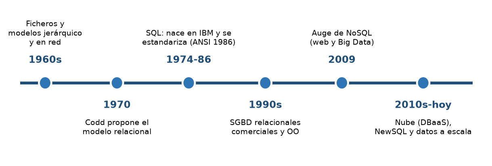
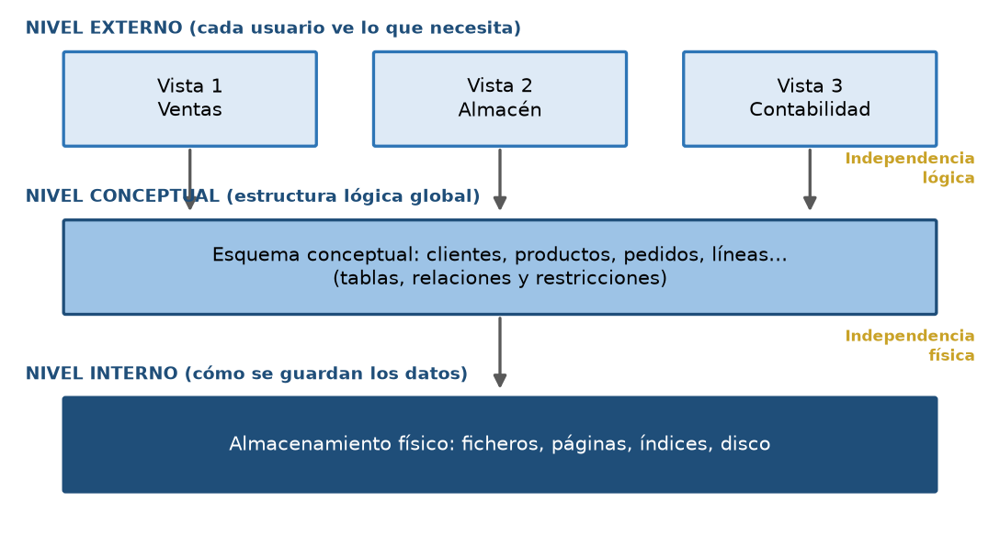
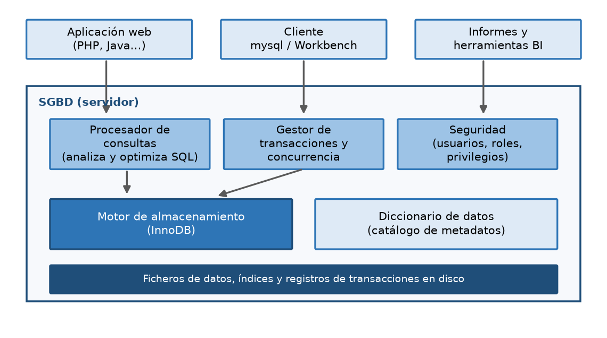
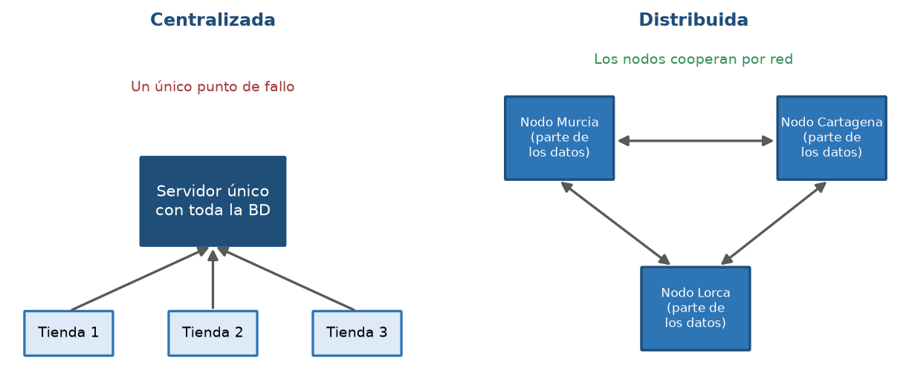
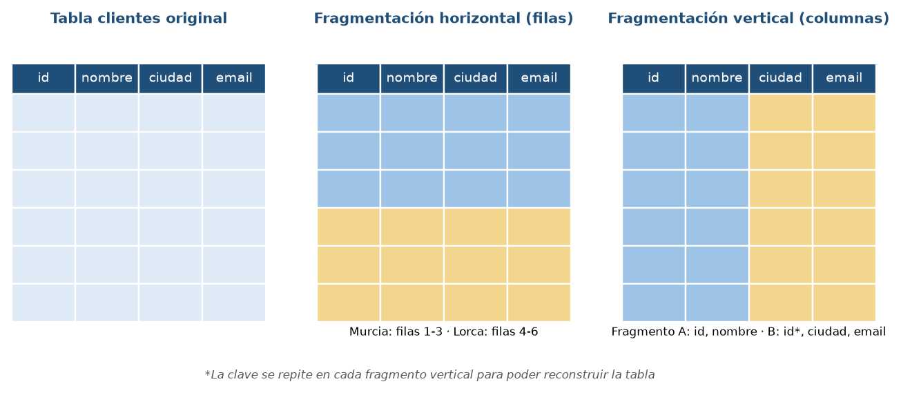

Inicio › UT1
Qué se trabaja
- Sistemas de almacenamiento: ficheros y bases de datos; modelos y ubicación de la información.
- Componentes y funciones de un SGBD, y su clasificación.
- Bases de datos distribuidas y fragmentación.
- Protección de datos (RGPD), Big Data e inteligencia de negocios.
Pruébalo en el laboratorio
UT1 · Explorar el catálogo del sistemaUT1 · Versión del motor
Figuras de la unidad




